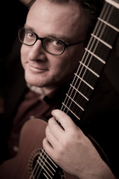

Over Peter Constant
Dirigent Peter Constant Peter Constant studeerde af als "most outstanding musician" aan de Australian National University, en behaalde daarna zijn 'Master of Music' aan Yale University in Amerika. Op zijn naam staan prestigieuze erkenningen zoals Harkness Fellowship en Fellow of Trinity College in Londen, tevens is hij meervoudig winnaar van de Australian Guitar Competition. Tussen 1993-98 was Peter hoofd van de gitaarafdeling van het Victorian College of the Arts (Melbourne University). Peter heeft vele tournees gemaakt in Australië, Amerika, Europa en Zuidoost Azië en is ook te horen op zo'n 10 CD's voor ABC Classics, Naxos en Move Records.
Sinds 14 jaar in Nederland gevestigd, concentreert Peter zich hoofdzakelijk op het Z.o.o. guitar duo (met Marion Schaap) dat regelmatig te horen is op Nederlandse en internationale podia, bijvoorbeeld het Grachtenfestival, Peter de Grote festival, Jazz- und Klassiktage Tübingen, Staunton Music Festival (Virginia), International Guitar Festival of Great Britain, Darwin International Guitar Festival, Avantgarde Cultural Foundation in Cyprus, het Concertgebouw te Amsterdam. Ook verscheen hij samen met o.a. gitaristen Izhar Elias en het Groningen Gitaarduo, pianist Eddy Janning (Erard ensemble) en mezzo-sopraan Alexandra Sherman.
Peter staat verder ook bekend als een inspirerende dirigent, pedagoog en ambassadeur voor de klassieke gitaar. Zo heeft hij de artistieke leiding in handen van Stichting Gitaarorkest Nederland, en voert hij regelmatig projecten uit met gitaarorkesten in verschillende landen, waaronder zowel het Nederlands- als het Europees Jeugd Gitaar Orkest. Recentelijk is Peter "artist in residence" geweest aan de University of Southern California en het Queensland Conservatorium. In 2011 dirigeerde hij maar liefst duizend gitaristen in het Olympisch Stadion van Berlijn, tijdens het World Culture Festival.